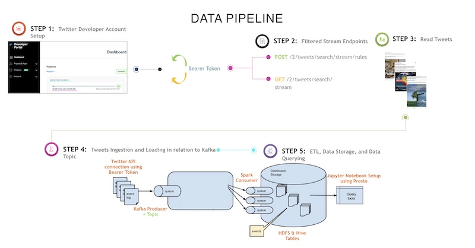
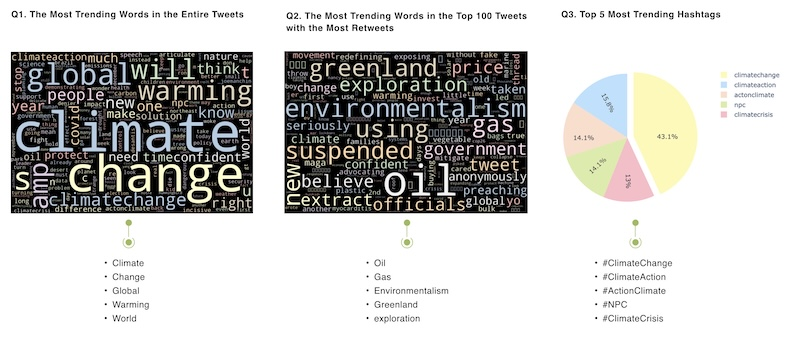
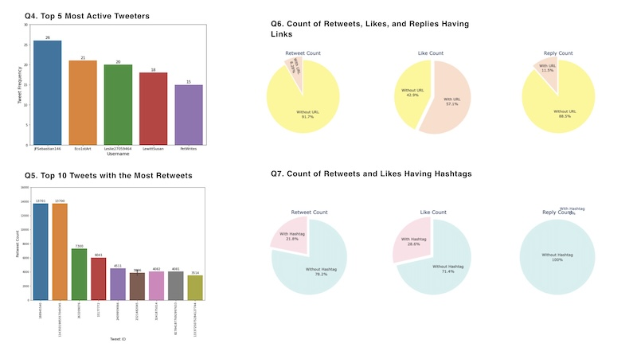

Real-Time Climate Change Insights From Twitter Stream
- Twitter has become a prominent source of real-time content, yet lacks the ability to perform Tweet analytics beyond the limited web user interface.
- Create a data pipeline to gather tweets based on customizable filtering rules and criteria.
- For the purpose of this project, the focus was to gather insights on tweets related to climate change.
- Climate change is a very important topic in today’s politics, both in the US and around the world. It is potentially the biggest existential challenge that humans have ever faced. In addition, it is also a controversial topic, with ideas for addressing it ranging from fundamental tranformation of world economies to completely ignoring it. Hence, understanding what people are saying about climate change could be of interest to political parties, environmental groups and corporations.
- The analysis of the twitter data in this project seeks to answer the following questions related
to climate change:
- What are the most frequently used words in the entire set of tweets?
- What are the frequently used words in the top 100 most retweeted tweets?
- What are the top 5 most trending hastags?
- What are the top 5 most active usernames?
- What are the top 10 most retweeted tweets?
- What fraction of retweets, likes and replies are from tweets with a URL in them, compared to tweets without a URL?
- What fraction of retweets, likes and replies are from tweets with a hashtag, compared to tweets without a hashtag?
- What percentage of tweets contain the hastags happeningnow or happening?
TECHNIQUE (Models), Technology
Technique

Technology
- Google Cloud Platform
- Docker Compose
- Zookeeper
- Kafka
- Spark
- HDFS
- Presto/Hive
- Python
Results Overview
Climate Question Synopsis


Q8: What percentage of tweets contain the hastags happeningnow or happening?
Subsetting the data set for tweets that contain #HapenningNow or #Happening, we find that only 0.0408% of the tweets contain one of these hashtags. This suggests that a very small fraction of tweets are regarding ongoing events or actual action
Discussion
- In the course of this project, we have built a data pipeline that is capable to receving and structuring customized tweet data from the twitter API. Specifically, we capture tweets related to climate change and use Kafka, Spark, Hadoop and Presto as the tools to construct the pipeline, where each of the tools is spun up as a container using docker-compose. The pipeline is capable of receiving tweets in real-time in streaming fashion from the creation of the tweets on twitter upto storing the tweet data into HDFS as a table. By querying the table, we are able to create vizualizations that aid in answering the business questions that motivate this project.
Note: Code and other details are available on request.